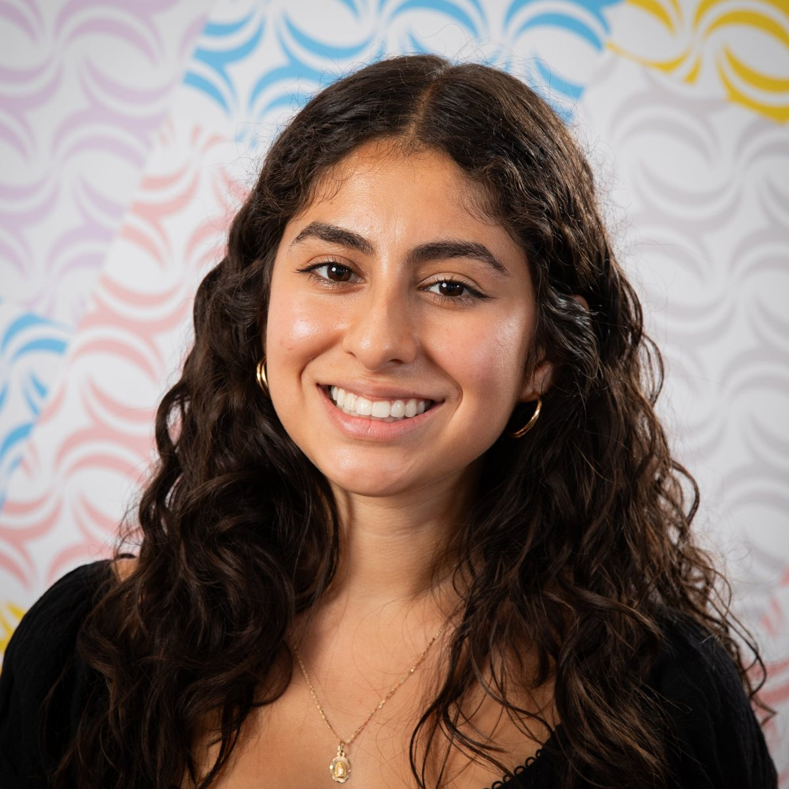
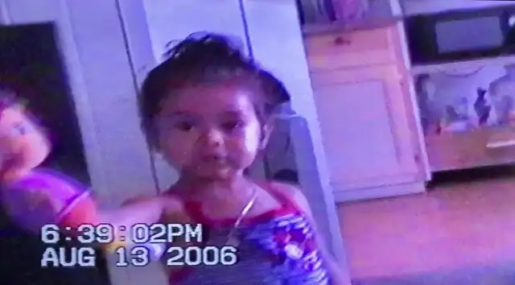

Welcome to my portfolio!
I’m a senior at Stanford studying Product Design on the Physical Design + Manufacturing track, with a minor in Mechanical Engineering and a domain in Designing for Biological Futures.
I fell in love with design from a very early age. Before I had the words for it, I was already trying to make things: building little inventions for my toys, cutting up cardboard, saving random craft supplies, and using my “crafting box” to fix things that bugged me. A lot of it was messy, but it taught me that design could start with curiosity, imagination, and the simple feeling of wait, this could be better.
Today, I’m interested in the space between people, objects, and systems, especially how thoughtful design can make everyday experiences feel more intuitive, accessible, and meaningful, and a little kinder to the planet. I also think a lot about what happens to the things we make after they leave our hands: who/what they’re made for and who they affect along the way. That’s a big part of why I’m planning to coterm in Sustainability Science and Practice.
At the heart of it, I think I’m still that same kid with a cardboard box, just with better tools, bigger questions, and a deeper care for the people (and the planet) I’m designing for <3.


me before i knew what design was
Production Design Research Intern · CCRMA, Stanford
Current
Social Media Design Intern · Flourish AI
2024
Materials Research · Soft Matter Product Design Lab, University of Miami
2024
Design Lead · The Design Kids, Stanford
2024–2026
Fusion 360, SolidWorks, Onshape, AutoCAD
Laser cutting
3D printing
Physical prototyping
Mechanism design (gears, cams, linkages)
Design for manufacturing (DFM)
Engineering drawings
Foam modeling
Materials testing + selection
Hand fabrication (PRL)
MATLAB
Figma
Brand identity
Sketching + rapid ideation
Adobe Illustrator, Photoshop
UI design + wireframing
Visual identity
Survey design (Qualtrics)
Storyboarding
Pitch decks
Short-form video
Needfinding
Interviews
Stakeholder + systems mapping
Prototype + usability testing
Synthesis + affinity mapping
Competitive analysis
Concept validation
Bilingual interviews (English/Spanish)
ME 102 Foundations of Product Realization
ME 103 Product Realization: Design and Making
ENGR 14/15 Intro to Solid Mechanics + Dynamics
ME 30 Engineering Thermodynamics
SUSTAIN 123 Delicious by Design
EARTHSYS 125 Shades of Green
BIOE 122 Biosecurity
ME 80 Mechanics of Materials